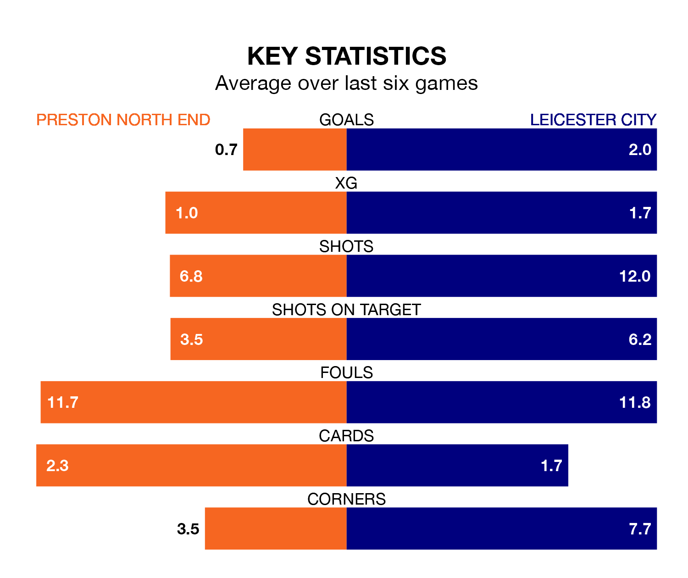

Leicester City are strong favourites to take all three points despite Preston North End's home advantage in Monday's late match at Deepdale.
*Betting Company* are offering odds of 1.5 on Leicester sealing the win, with the visitors sitting first in EFL Championship table.
Preston, who are 10th in the league and 31 points behind the Foxes, are priced at 5.3 to win. A draw is set at 4.1.
With 86 goals in 44 games so far this season, Leicester are the league's highest scorers with 2.0 goals per game. And they are conceding fewer than average, letting in 39 goals at a rate of 0.9 per game.
Preston, meanwhile, are average scorers, with 1.3 goals per game. They have conceded 1.4 goals per game.
North End are in bad form in EFL Championship, with one win and a draw from their last six games.
With four wins and two losses over that period, City's form is much better – they have taken 12 points from 18, compared to the Lilywhites' four.
With Mads Hermansen between the sticks, the Foxes can rely on one of the league's safest pair of hands. He has kept 13 clean sheets in his 43 appearances this season in EFL Championship.
In the hosts' net, Freddie Woodman has 10 clean sheets in 42 games. He has conceded a goal every 73 minutes, 60% more often than the 117 minutes between goals for Hermansen.
Over the last two years, Preston and Leicester have played each other twice. Leicester won both of them.
Their last meeting was on October 4, when Leicester won 3-0 at home.
Preston's last match was on April 20, a 1-0 loss against Queens Park Rangers.
Leicester beat Southampton 5-0 last time out, on Tuesday, with Issahaku Abdul Fatawu (three), Jamie Vardy and Wilfred Ndidi on the scoresheet.
Monday's match will be refereed by Samuel Allison, who has taken charge of 16 EFL Championship games so far this season, issuing one red card and booking 59 players. He has awarded one penalty.
The last Preston game Allison refereed was a 1-1 away draw with Rotherham United on September 23. His last Leicester match was their 4-1 win at home against Huddersfield Town on January 1.
Updated: 07:59 (UTC), 26/04/24